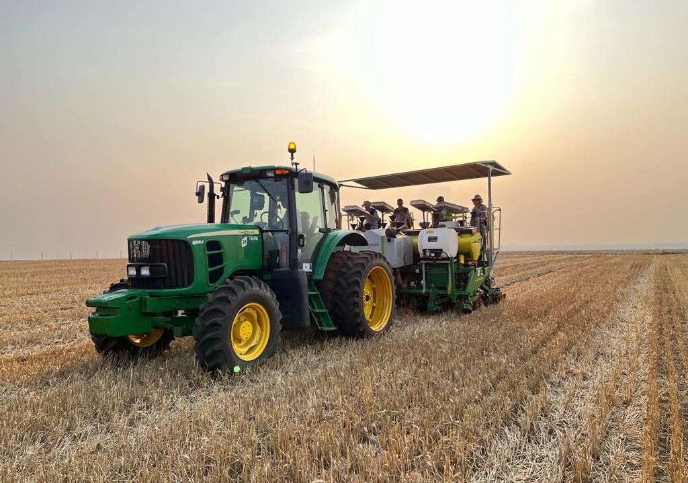

Você sabia que existem muitas oportunidades no campo nos dias de hoje?

É evidente que, ao passar dos anos, novas tecnologias vêm surgindo, o que trouxe muitos avanços para diversas áreas de importantes papéis para o funcionamento da nossa sociedade atual, e com a agricultura, não foi diferente.
Hoje, por conta do avanço tecnológico, existem múltiplas máquinas que, cada vez mais vêm aprimorando e facilitando o trabalho dos produtores rurais, através da modernização e da tecnologia implementada. Isso tem permitido uma produção mais eficiente, sustentável e rentável, impulsionando o desenvolvimento do setor agrícola e beneficiando toda a cadeia alimentar.
De maneira geral, o avanço tecnológico traz inúmeros benefícios para os agricultores, resultando em um aumento significativo na variedade de produtos disponíveis. Isso se traduz no abastecimento das prateleiras dos supermercados, proporcionando aos consumidores uma seleção mais diversificada de alimentos para adquirir e consumir em suas residências.